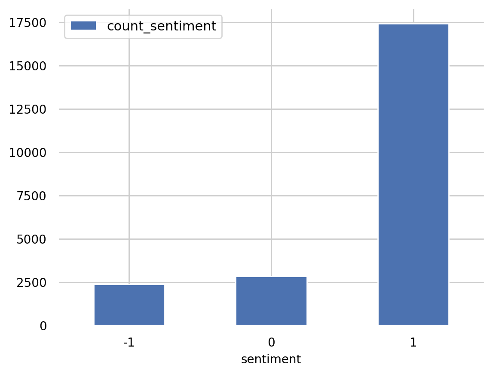
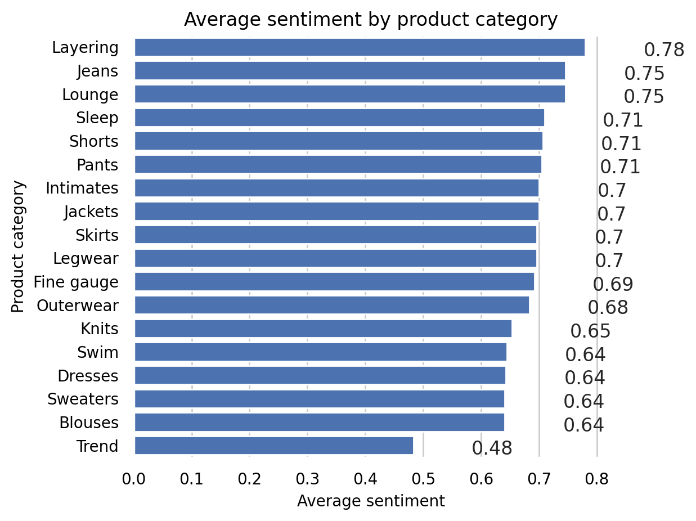
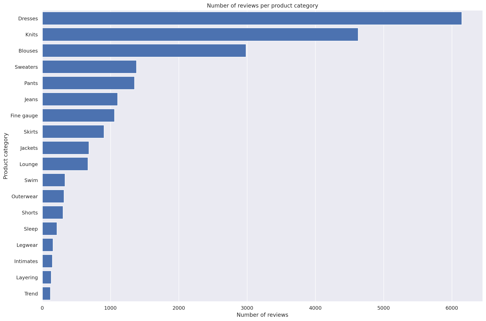
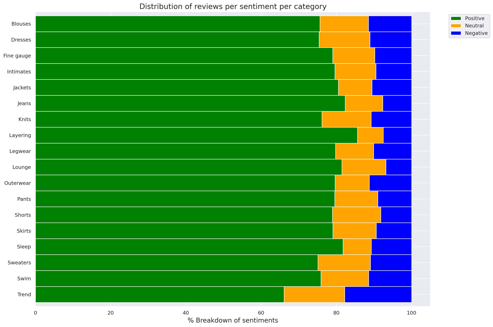
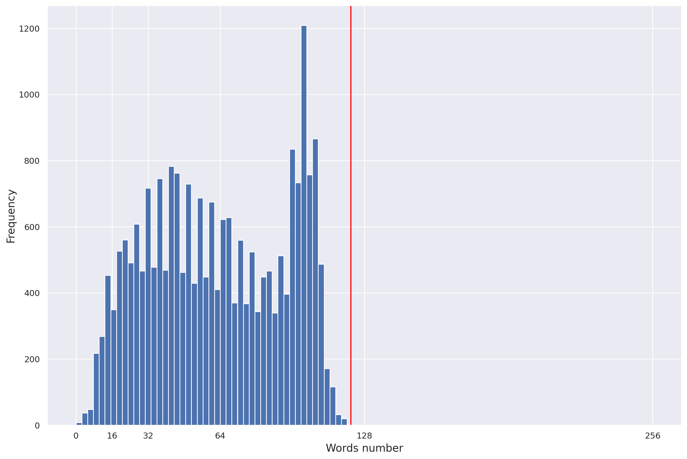

!aws s3 ls s3://dlai-practical-data-science/data/raw/womens_clothing_ecommerce_reviews.csv2021-04-30 02:21:06 8457214 womens_clothing_ecommerce_reviews.csvIn this project we will ingest and transform a customer product reviews dataset using AWS (Amazon Web Services) cloud services. We will then use AWS data stack services such as AWS Glue and Amazon Athena for ingesting and querying the dataset. Finally we will use AWS Data Wrangler to analyze the dataset and plot some visuals extracting insights.
This exploration could be useful for a range of tasks, including creating a sentiment analysis text classification model - which is something we will explore in future articles.
Data Science can be performed in a range of devices and environments, from local machines and laptops, to dedicated server centers, to cloud services such as AWS or Azure Databricks.
Why would you want to use cloud services for Data Science?

AWS offers a range of different services that can help at different stages of the machine learning development cycle.

In this article we will be demonstrating how we can use AWS for the Ingesting and Analysing stage, so we will be using the following services:
The dataset we will use is the Women’s Clothing Reviews a public dataset available on kaggle.
It is shared in a public Amazon S3 bucket, and is available as a comma-separated value (CSV) text format:
s3://dlai-practical-data-science/data/raw/womens_clothing_ecommerce_reviews.csv

The AWS Command Line Interface (CLI) is a unified tool to manage AWS services. With just one tool, you can control multiple AWS services from the command line and automate them through scripts. We will use it to list the dataset files.
aws s3 ls [bucket_name] is a function lists all objects in the S3 bucket. Let’s use it to view the reviews data files in CSV format.
!aws s3 ls s3://dlai-practical-data-science/data/raw/womens_clothing_ecommerce_reviews.csv2021-04-30 02:21:06 8457214 womens_clothing_ecommerce_reviews.csvaws s3 cp [bucket_name/file_name] [file_name] is a function that copies the file from the S3 bucket into the local environment or into another S3 bucket. Let’s use it to copy the file with the dataset locally.
!aws s3 cp s3://dlai-practical-data-science/data/raw/womens_clothing_ecommerce_reviews.csv ./womens_clothing_ecommerce_reviews.csvdownload: s3://dlai-practical-data-science/data/raw/womens_clothing_ecommerce_reviews.csv to ./womens_clothing_ecommerce_reviews.csvNow we will use Pandas to load and preview the data.
import pandas as pd
import csv
df = pd.read_csv('./womens_clothing_ecommerce_reviews.csv',
index_col=0)
df.shape(23486, 10)df| Clothing ID | Age | Title | Review Text | Rating | Recommended IND | Positive Feedback Count | Division Name | Department Name | Class Name | |
|---|---|---|---|---|---|---|---|---|---|---|
| 0 | 847 | 33 | Cute, crisp shirt | If this product was in petite i would get the... | 4 | 1 | 2 | General | Tops | Blouses |
| 1 | 1080 | 34 | NaN | Love this dress! it's sooo pretty. i happene... | 5 | 1 | 4 | General | Dresses | Dresses |
| 2 | 1077 | 60 | Some major design flaws | I had such high hopes for this dress and reall... | 3 | 0 | 0 | General | Dresses | Dresses |
| 3 | 1049 | 50 | My favorite buy! | I love love love this jumpsuit. it's fun fl... | 5 | 1 | 0 | General Petite | Bottoms | Pants |
| 4 | 847 | 47 | Flattering shirt | This shirt is very flattering to all due to th... | 5 | 1 | 6 | General | Tops | Blouses |
| ... | ... | ... | ... | ... | ... | ... | ... | ... | ... | ... |
| 23481 | 1104 | 34 | Great dress for many occasions | I was very happy to snag this dress at such a ... | 5 | 1 | 0 | General Petite | Dresses | Dresses |
| 23482 | 862 | 48 | Wish it was made of cotton | It reminds me of maternity clothes. soft stre... | 3 | 1 | 0 | General Petite | Tops | Knits |
| 23483 | 1104 | 31 | Cute, but see through | This fit well but the top was very see throug... | 3 | 0 | 1 | General Petite | Dresses | Dresses |
| 23484 | 1084 | 28 | Very cute dress, perfect for summer parties an... | I bought this dress for a wedding i have this ... | 3 | 1 | 2 | General | Dresses | Dresses |
| 23485 | 1104 | 52 | Please make more like this one! | This dress in a lovely platinum is feminine an... | 5 | 1 | 22 | General Petite | Dresses | Dresses |
23486 rows × 10 columns
To simplify the task, we will transform the data into a comma-separated value (CSV) file that contains only a review_body, product_category, and sentiment derived from the original data.
df_transformed = df.rename(columns={'Review Text': 'review_body',
'Rating': 'star_rating',
'Class Name': 'product_category'})
df_transformed.drop(columns=['Clothing ID', 'Age', 'Title', 'Recommended IND', 'Positive Feedback Count', 'Division Name', 'Department Name'],
inplace=True)
df_transformed.dropna(inplace=True)
df_transformed.shape(22628, 3)Now lets convert the star_rating into the sentiment (positive, neutral, negative), which later on we could use for a text classification model.
def to_sentiment(star_rating):
if star_rating in {1, 2}: # negative
return -1
if star_rating == 3: # neutral
return 0
if star_rating in {4, 5}: # positive
return 1
# transform star_rating into the sentiment
df_transformed['sentiment'] = df_transformed['star_rating'].apply(lambda star_rating:
to_sentiment(star_rating=star_rating)
)
# drop the star rating column
df_transformed.drop(columns=['star_rating'],
inplace=True)
# remove reviews for product_categories with < 10 reviews
df_transformed = df_transformed.groupby('product_category').filter(lambda reviews : len(reviews) > 10)[['sentiment', 'review_body', 'product_category']]
df_transformed.shape(22626, 3)# preview the results
df_transformed| sentiment | review_body | product_category | |
|---|---|---|---|
| 0 | 1 | If this product was in petite i would get the... | Blouses |
| 1 | 1 | Love this dress! it's sooo pretty. i happene... | Dresses |
| 2 | 0 | I had such high hopes for this dress and reall... | Dresses |
| 3 | 1 | I love love love this jumpsuit. it's fun fl... | Pants |
| 4 | 1 | This shirt is very flattering to all due to th... | Blouses |
| ... | ... | ... | ... |
| 23481 | 1 | I was very happy to snag this dress at such a ... | Dresses |
| 23482 | 0 | It reminds me of maternity clothes. soft stre... | Knits |
| 23483 | 0 | This fit well but the top was very see throug... | Dresses |
| 23484 | 0 | I bought this dress for a wedding i have this ... | Dresses |
| 23485 | 1 | This dress in a lovely platinum is feminine an... | Dresses |
22626 rows × 3 columns
df_transformed.to_csv('./womens_clothing_ecommerce_reviews_transformed.csv',
index=False)!head -n 5 ./womens_clothing_ecommerce_reviews_transformed.csvsentiment,review_body,product_category
1,If this product was in petite i would get the petite. the regular is a little long on me but a tailor can do a simple fix on that. fits nicely! i'm 5'4 130lb and pregnant so i bough t medium to grow into. the tie can be front or back so provides for some nice flexibility on form fitting.,Blouses
1,"Love this dress! it's sooo pretty. i happened to find it in a store and i'm glad i did bc i never would have ordered it online bc it's petite. i bought a petite and am 5'8"". i love the length on me- hits just a little below the knee. would definitely be a true midi on someone who is truly petite.",Dresses
0,I had such high hopes for this dress and really wanted it to work for me. i initially ordered the petite small (my usual size) but i found this to be outrageously small. so small in fact that i could not zip it up! i reordered it in petite medium which was just ok. overall the top half was comfortable and fit nicely but the bottom half had a very tight under layer and several somewhat cheap (net) over layers. imo a major design flaw was the net over layer sewn directly into the zipper - it c,Dresses
1,I love love love this jumpsuit. it's fun flirty and fabulous! every time i wear it i get nothing but great compliments!,PantsWe will now register the public dataset into an S3-backed database table so we can query and visualize our dataset at scale.
Before we can use Amazon Athena to query our data, we first need to get our data ‘registered’ so we can do this.
Let’s import some key modules.
boto3 is the AWS SDK for Python to create, configure, and manage AWS services, such as Amazon Elastic Compute Cloud (Amazon EC2) and Amazon Simple Storage Service (Amazon S3). The SDK provides an object-oriented API as well as low-level access to AWS services.
sagemaker is the SageMaker Python SDK which provides several high-level abstractions for working with the Amazon SageMaker.
import boto3
import sagemaker
import pandas as pd
import numpy as np
import botocore
config = botocore.config.Config(user_agent_extra='dlai-pds/c1/w1')
# low-level service client of the boto3 session
sm = boto3.client(service_name='sagemaker',
config=config)
sess = sagemaker.Session(sagemaker_client=sm)
bucket = sess.default_bucket()
role = sagemaker.get_execution_role()
region = sess.boto_region_name
account_id = sess.account_id
print('S3 Bucket: {}'.format(bucket))
print('Region: {}'.format(region))
print('Account ID: {}'.format(account_id))S3 Bucket: sagemaker-us-east-1-634231958143
Region: us-east-1
Account ID: <bound method Session.account_id of <sagemaker.session.Session object at 0x7f987cf24490>>Lets now copy the file into the S3 bucket.
!aws s3 cp ./womens_clothing_ecommerce_reviews_transformed.csv s3://$bucket/data/transformed/womens_clothing_ecommerce_reviews_transformed.csvupload: ./womens_clothing_ecommerce_reviews_transformed.csv to s3://sagemaker-us-east-1-634231958143/data/transformed/womens_clothing_ecommerce_reviews_transformed.csvImport AWS Data Wrangler
AWS Data Wrangler is an AWS Professional Service open source python initiative part of Amazon Sagemaker - that extends the power of Pandas library to AWS connecting dataframes and AWS data related services (Amazon Redshift, AWS Glue, Amazon Athena, Amazon EMR, Amazon QuickSight, etc).

Built on top of other open-source projects like Pandas, Apache Arrow, Boto3, SQLAlchemy, Psycopg2 and PyMySQL, it offers abstracted functions to execute usual ETL tasks like load/unload data from data lakes, data warehouses and databases.
import awswrangler as wrThe data catalog features of AWS Glue and the inbuilt integration to Amazon S3 simplify the process of identifying data and deriving the schema definition out of the discovered data. Using AWS Glue crawlers within our data catalog, we can traverse the data stored in Amazon S3 and build out the metadata tables that are defined in our data catalog.

Here we will use the wr.catalog.create_database function to create a database with the name dsoaws_deep_learning (“dsoaws” stands for “Data Science on AWS”).
wr.catalog.create_database(
name='dsoaws_deep_learning',
exist_ok=True
)dbs = wr.catalog.get_databases()
for db in dbs:
print("Database name: " + db['Name'])Database name: dsoaws_deep_learningwr.catalog.create_csv_table(
database='dsoaws_deep_learning',
path='s3://{}/data/transformed/'.format(bucket),
table="reviews",
columns_types={
'sentiment': 'int',
'review_body': 'string',
'product_category': 'string'
},
mode='overwrite',
skip_header_line_count=1,
sep=','
)Review the table shape:
table = wr.catalog.table(database='dsoaws_deep_learning',
table='reviews')
table| Column Name | Type | Partition | Comment | |
|---|---|---|---|---|
| 0 | sentiment | int | False | |
| 1 | review_body | string | False | |
| 2 | product_category | string | False |
We can use Amazon Athena to query our results. Amazon Athena requires this S3 bucket to store temporary query results and improve performance of subsequent queries.
The contents of this bucket are mostly binary and human-unreadable.
# S3 bucket name
wr.athena.create_athena_bucket()'s3://aws-athena-query-results-634231958143-us-east-1/'Let’s review the columns we have selected from our reviews dataset.
sentiment: The review’s sentiment (-1, 0, 1).product_category: Broad product category that can be used to group reviews (in this case digital videos).review_body: The text of the review.Imports
import numpy as np
import seaborn as sns
import matplotlib.pyplot as plt
%matplotlib inline
%config InlineBackend.figure_format='retina'Settings
We need to set an AWS Glue database and a table name.
database_name = 'dsoaws_deep_learning'
table_name = 'reviews'Let’s also define some seaborn config for our visualisations.
sns.set_style = 'seaborn-whitegrid'
sns.set(rc={"font.style":"normal",
"axes.facecolor":"white",
'grid.color': '.8',
'grid.linestyle': '-',
"figure.facecolor":"white",
"figure.titlesize":20,
"text.color":"black",
"xtick.color":"black",
"ytick.color":"black",
"axes.labelcolor":"black",
"axes.grid":True,
'axes.labelsize':10,
'xtick.labelsize':10,
'font.size':10,
'ytick.labelsize':10})Amazon Athena lets you query data in Amazon S3 using a standard SQL interface. It reflects the databases and tables in the AWS Glue Catalog.

You can create interactive queries and perform any data manipulations required for further downstream processing.

A Standard SQL query can be saved as a string and then passed as a parameter into the Athena query. For example to count the total number of reviews by sentiment, the SQL query here will take the following form:
SELECT column_name, COUNT(column_name) as new_column_name
FROM table_name
GROUP BY column_name
ORDER BY column_namestatement_count_by_sentiment = """
SELECT sentiment, COUNT(sentiment) AS count_sentiment
FROM reviews
GROUP BY sentiment
ORDER BY sentiment
"""
print(statement_count_by_sentiment)
SELECT sentiment, COUNT(sentiment) AS count_sentiment
FROM reviews
GROUP BY sentiment
ORDER BY sentiment
Query data in Amazon Athena database cluster using the prepared SQL statement:
df_count_by_sentiment = wr.athena.read_sql_query(
sql=statement_count_by_sentiment,
database=database_name
)
print(df_count_by_sentiment) sentiment count_sentiment
0 -1 2370
1 0 2823
2 1 17433Preview the results of the query:
df_count_by_sentiment.plot(kind='bar', x='sentiment', y='count_sentiment', rot=0)<AxesSubplot:xlabel='sentiment'>
So we can see the positive sentiment (1) category has by far the most reviews.
Using an Amazon Athena query with the standard SQL statement passed as a parameter, we can calculate the total number of reviews per product_category in the table reviews.
We can create an SQL statement of the form
SELECT category_column, COUNT(column_name) AS new_column_name
FROM table_name
GROUP BY category_column
ORDER BY new_column_name DESCas a triple quote string into the variable statement_count_by_category. We will also use the column sentiment in the COUNT function and give it a new name count_sentiment.
statement_count_by_category = """
SELECT product_category, COUNT(sentiment) AS count_sentiment
FROM reviews
GROUP BY product_category
ORDER BY count_sentiment DESC
"""
print(statement_count_by_category)
SELECT product_category, COUNT(sentiment) AS count_sentiment
FROM reviews
GROUP BY product_category
ORDER BY count_sentiment DESC
Let’s query data in Amazon Athena database passing the prepared SQL statement:
%%time
df_count_by_category = wr.athena.read_sql_query(
sql=statement_count_by_category,
database=database_name
)
df_count_by_categoryCPU times: user 320 ms, sys: 24.5 ms, total: 345 ms
Wall time: 3.27 s| product_category | count_sentiment | |
|---|---|---|
| 0 | Dresses | 6145 |
| 1 | Knits | 4626 |
| 2 | Blouses | 2983 |
| 3 | Sweaters | 1380 |
| 4 | Pants | 1350 |
| 5 | Jeans | 1104 |
| 6 | Fine gauge | 1059 |
| 7 | Skirts | 903 |
| 8 | Jackets | 683 |
| 9 | Lounge | 669 |
| 10 | Swim | 332 |
| 11 | Outerwear | 319 |
| 12 | Shorts | 304 |
| 13 | Sleep | 214 |
| 14 | Legwear | 158 |
| 15 | Intimates | 147 |
| 16 | Layering | 132 |
| 17 | Trend | 118 |
We will set the SQL statement to find the average sentiment per product category, showing the results in the descending order.
statement_avg_by_category = """
SELECT product_category, AVG(sentiment) AS avg_sentiment
FROM {}
GROUP BY product_category
ORDER BY avg_sentiment DESC
""".format(table_name)
print(statement_avg_by_category)
SELECT product_category, AVG(sentiment) AS avg_sentiment
FROM reviews
GROUP BY product_category
ORDER BY avg_sentiment DESC
Lets query data in Amazon Athena database passing the prepared SQL statement:
%%time
df_avg_by_category = wr.athena.read_sql_query(
sql=statement_avg_by_category,
database=database_name
)CPU times: user 462 ms, sys: 16.5 ms, total: 478 ms
Wall time: 3.74 sLet’s now preview the query results in the temporary S3 bucket: s3://aws-athena-query-results-ACCOUNT-REGION/
df_avg_by_category| product_category | avg_sentiment | |
|---|---|---|
| 0 | Layering | 0.780303 |
| 1 | Jeans | 0.746377 |
| 2 | Lounge | 0.745889 |
| 3 | Sleep | 0.710280 |
| 4 | Shorts | 0.707237 |
| 5 | Pants | 0.705185 |
| 6 | Intimates | 0.700680 |
| 7 | Jackets | 0.699854 |
| 8 | Skirts | 0.696567 |
| 9 | Legwear | 0.696203 |
| 10 | Fine gauge | 0.692162 |
| 11 | Outerwear | 0.683386 |
| 12 | Knits | 0.653913 |
| 13 | Swim | 0.644578 |
| 14 | Dresses | 0.643287 |
| 15 | Sweaters | 0.641304 |
| 16 | Blouses | 0.641301 |
| 17 | Trend | 0.483051 |
Visualization
def show_values_barplot(axs, space):
def _show_on_plot(ax):
for p in ax.patches:
_x = p.get_x() + p.get_width() + float(space)
_y = p.get_y() + p.get_height()
value = round(float(p.get_width()),2)
ax.text(_x, _y, value, ha="left")
if isinstance(axs, np.ndarray):
for idx, ax in np.ndenumerate(axs):
_show_on_plot(ax)
else:
_show_on_plot(axs)# Create plot
barplot = sns.barplot(
data = df_avg_by_category,
y='product_category',
x='avg_sentiment',
color="b",
saturation=1
)
# Set the size of the figure
sns.set(rc={'figure.figsize':(15.0, 10.0)})
# Set title and x-axis ticks
plt.title('Average sentiment by product category')
#plt.xticks([-1, 0, 1], ['Negative', 'Neutral', 'Positive'])
# Helper code to show actual values afters bars
show_values_barplot(barplot, 0.1)
plt.xlabel("Average sentiment")
plt.ylabel("Product category")
plt.tight_layout()
# Show graphic
plt.show(barplot)
Let’s create an SQL statement to find the count of sentiment per product category, showing the results in the descending order.
statement_count_by_category_desc = """
SELECT product_category, COUNT(*) AS count_reviews
FROM {}
GROUP BY product_category
ORDER BY count_reviews DESC
""".format(table_name)
print(statement_count_by_category_desc)
SELECT product_category, COUNT(*) AS count_reviews
FROM reviews
GROUP BY product_category
ORDER BY count_reviews DESC
Now lets query data in Amazon Athena database passing the prepared SQL statement.
%%time
df_count_by_category_desc = wr.athena.read_sql_query(
sql=statement_count_by_category_desc,
database=database_name
)CPU times: user 360 ms, sys: 22.6 ms, total: 382 ms
Wall time: 4.38 sLet’s store maximum number of sentiment for the visualization plot.
max_sentiment = df_count_by_category_desc['count_reviews'].max()
print('Highest number of reviews (in a single category): {}'.format(max_sentiment))Highest number of reviews (in a single category): 6145Let’s now plot this as a bar chart.
# Create seaborn barplot
barplot = sns.barplot(
data=df_count_by_category_desc,
y='product_category',
x='count_reviews',
color="b",
saturation=1
)
# Set the size of the figure
sns.set(rc={'figure.figsize':(15.0, 10.0)})
# Set title
plt.title("Number of reviews per product category")
plt.xlabel("Number of reviews")
plt.ylabel("Product category")
plt.tight_layout()
# Show the barplot
plt.show(barplot)
Let’s set the SQL statement to find the count of sentiment per product category and sentiment.
statement_count_by_category_and_sentiment = """
SELECT product_category,
sentiment,
COUNT(*) AS count_reviews
FROM {}
GROUP BY product_category, sentiment
ORDER BY product_category ASC, sentiment DESC, count_reviews
""".format(table_name)
print(statement_count_by_category_and_sentiment)
SELECT product_category,
sentiment,
COUNT(*) AS count_reviews
FROM reviews
GROUP BY product_category, sentiment
ORDER BY product_category ASC, sentiment DESC, count_reviews
Now we query the data in Amazon Athena database passing the prepared SQL statement.
%%time
df_count_by_category_and_sentiment = wr.athena.read_sql_query(
sql=statement_count_by_category_and_sentiment,
database=database_name
)CPU times: user 482 ms, sys: 22 ms, total: 504 ms
Wall time: 3.56 sLet’s prepare for a stacked percentage horizontal bar plot showing proportion of sentiments per product category.
# Create grouped dataframes by category and by sentiment
grouped_category = df_count_by_category_and_sentiment.groupby('product_category')
grouped_star = df_count_by_category_and_sentiment.groupby('sentiment')
# Create sum of sentiments per star sentiment
df_sum = df_count_by_category_and_sentiment.groupby(['sentiment']).sum()
# Calculate total number of sentiments
total = df_sum['count_reviews'].sum()
print('Total number of reviews: {}'.format(total))Total number of reviews: 22626And create a dictionary of product categories and array of star rating distribution per category.
distribution = {}
count_reviews_per_star = []
i=0
for category, sentiments in grouped_category:
count_reviews_per_star = []
for star in sentiments['sentiment']:
count_reviews_per_star.append(sentiments.at[i, 'count_reviews'])
i=i+1;
distribution[category] = count_reviews_per_starNow let’s build an array per star across all categories.
distribution{'Blouses': [2256, 384, 343],
'Dresses': [4634, 830, 681],
'Fine gauge': [837, 118, 104],
'Intimates': [117, 16, 14],
'Jackets': [550, 61, 72],
'Jeans': [909, 110, 85],
'Knits': [3523, 605, 498],
'Layering': [113, 9, 10],
'Legwear': [126, 16, 16],
'Lounge': [545, 78, 46],
'Outerwear': [254, 29, 36],
'Pants': [1074, 154, 122],
'Shorts': [240, 39, 25],
'Skirts': [714, 104, 85],
'Sleep': [175, 16, 23],
'Sweaters': [1036, 193, 151],
'Swim': [252, 42, 38],
'Trend': [78, 19, 21]}df_distribution_pct = pd.DataFrame(distribution).transpose().apply(
lambda num_sentiments: num_sentiments/sum(num_sentiments)*100, axis=1
)
df_distribution_pct.columns=['1', '0', '-1']
df_distribution_pct| 1 | 0 | -1 | |
|---|---|---|---|
| Blouses | 75.628562 | 12.872947 | 11.498491 |
| Dresses | 75.410903 | 13.506916 | 11.082181 |
| Fine gauge | 79.036827 | 11.142587 | 9.820585 |
| Intimates | 79.591837 | 10.884354 | 9.523810 |
| Jackets | 80.527086 | 8.931186 | 10.541728 |
| Jeans | 82.336957 | 9.963768 | 7.699275 |
| Knits | 76.156507 | 13.078253 | 10.765240 |
| Layering | 85.606061 | 6.818182 | 7.575758 |
| Legwear | 79.746835 | 10.126582 | 10.126582 |
| Lounge | 81.464873 | 11.659193 | 6.875934 |
| Outerwear | 79.623824 | 9.090909 | 11.285266 |
| Pants | 79.555556 | 11.407407 | 9.037037 |
| Shorts | 78.947368 | 12.828947 | 8.223684 |
| Skirts | 79.069767 | 11.517165 | 9.413068 |
| Sleep | 81.775701 | 7.476636 | 10.747664 |
| Sweaters | 75.072464 | 13.985507 | 10.942029 |
| Swim | 75.903614 | 12.650602 | 11.445783 |
| Trend | 66.101695 | 16.101695 | 17.796610 |
Let’s plot the distributions of sentiments per product category.
categories = df_distribution_pct.index
# Plot bars
plt.figure(figsize=(10,5))
df_distribution_pct.plot(kind="barh",
stacked=True,
edgecolor='white',
width=1.0,
color=['green',
'orange',
'blue'])
plt.title("Distribution of reviews per sentiment per category",
fontsize='16')
plt.legend(bbox_to_anchor=(1.04,1),
loc="upper left",
labels=['Positive',
'Neutral',
'Negative'])
plt.xlabel("% Breakdown of sentiments", fontsize='14')
plt.gca().invert_yaxis()
plt.tight_layout()
plt.show()<Figure size 1000x500 with 0 Axes>
Let’s now set the SQL statement to count the number of the words in each of the reviews.
statement_num_words = """
SELECT CARDINALITY(SPLIT(review_body, ' ')) as num_words
FROM {}
""".format(table_name)
print(statement_num_words)
SELECT CARDINALITY(SPLIT(review_body, ' ')) as num_words
FROM reviews
Now query the data in Amazon Athena database passing the SQL statement.
%%time
df_num_words = wr.athena.read_sql_query(
sql=statement_num_words,
database=database_name
)CPU times: user 286 ms, sys: 20.9 ms, total: 307 ms
Wall time: 3.25 sLet’s print out and analyse some descriptive statistics.
summary = df_num_words["num_words"].describe(percentiles=[0.10, 0.20, 0.30, 0.40, 0.50, 0.60, 0.70, 0.80, 0.90, 1.00])
summarycount 22626.000000
mean 62.709847
std 29.993735
min 2.000000
10% 22.000000
20% 33.000000
30% 42.000000
40% 51.000000
50% 61.000000
60% 72.000000
70% 86.000000
80% 97.000000
90% 103.000000
100% 122.000000
max 122.000000
Name: num_words, dtype: float64Now we will plot the distribution of the words number per review.
df_num_words["num_words"].plot.hist(xticks=[0, 16, 32, 64, 128, 256], bins=100, range=[0, 256]).axvline(
x=summary["100%"], c="red"
)
plt.xlabel("Words number", fontsize='14')
plt.ylabel("Frequency", fontsize='14')
plt.savefig('distribution_num_words_per_review.png', dpi=300)
plt.show()
I’d like to express my thanks to the great Deep Learning AI Practical Data Science on AWS Specialisation Course which i completed, and acknowledge the use of some images and other materials from the training course in this article.